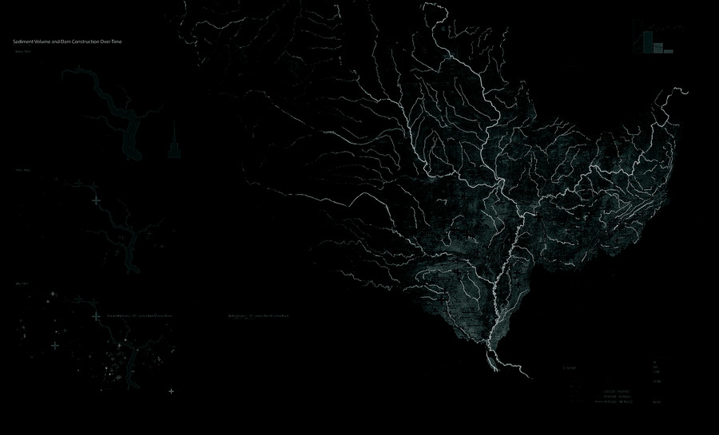

Coast · Infrastructure
The interface between the constructed environment and ecological systems is slowly blurring through strategies in urbanism, biological engineering, and technological interface. These strategies encourage the application of responsive technologies to create new relationships through sensing and feedback, developing novel ecological systems. This novel set of ecologies demands a deconstruction of settlement, infrastructure, and biological systems to frame the constructed landscape as a synthesizer of biotic and abiotic processes.“The interstices of these new relationships become the medium in which this course will examine new potentials for sensing, monitoring, and automation as a starting point to reimagine coastal infrastructure.”
The course focuses on a primary method of inquiry — the construction of what Levi Bryant calls an onto-cartography, a cartographic mode that maps objects (machines) and the connections between these objects. The resultant framework is continually modified to test methods of sensing and feedback through mockups and prototypes, engaging prototyping, virtual models, and physical models to develop infrastructural proposals for sites in the lower Mississippi River.
About the seminar
Cyborg Coasts | Responsive Hydrologies is a research seminar at the Harvard Graduate School of Design that examines the interface between the constructed environment and ecological systems. Using responsive technologies — sensing, feedback, and automation — the course develops active methods for the management of biological systems, spanning a range of scales from micro adjustments of processes to regional management and monitoring. Primarily, responsive technologies create a new recursive or iterative relationship between computation and biology.
Faculty: Bradley Cantrell, Associate Professor of Landscape Architectural Technology. Meeting: Wednesday 3:00–6:00pm, Gund Hall Gropius + 7 Sumner Basement (Responsive Environments and Artifacts Lab).
This page documents the Spring 2015 offering (GSD 9139). The course was taught again in Spring 2016 as GSD 6346.